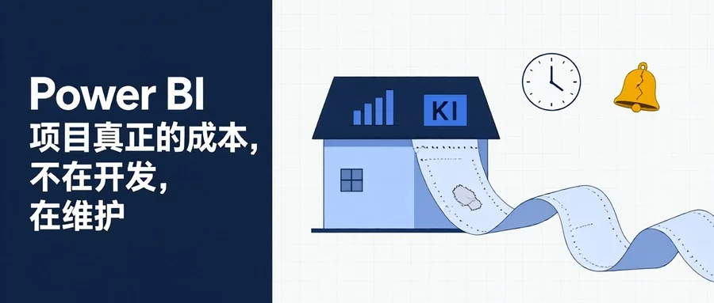
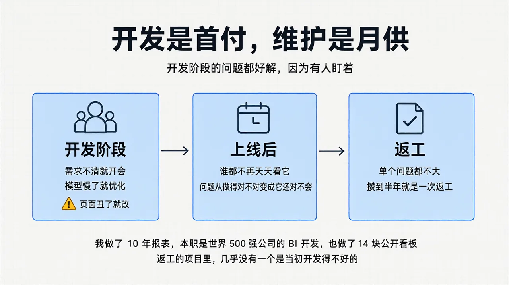
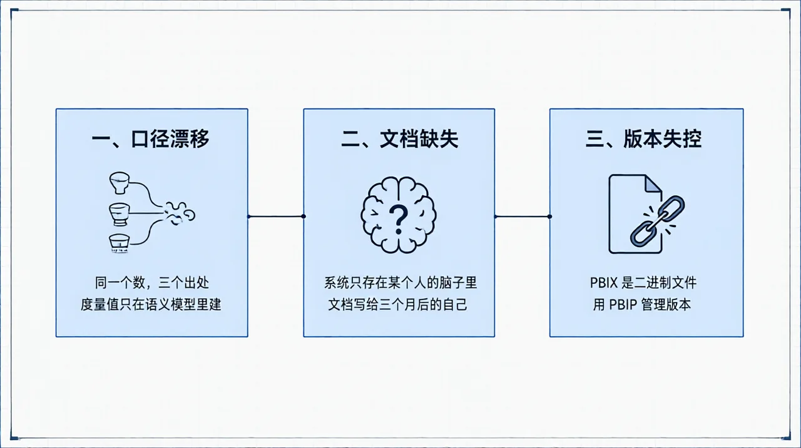
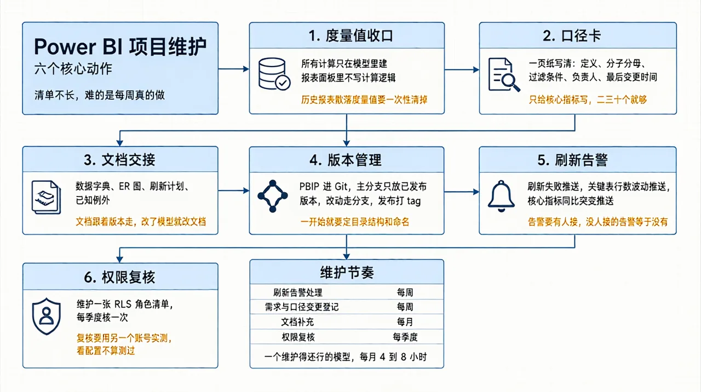
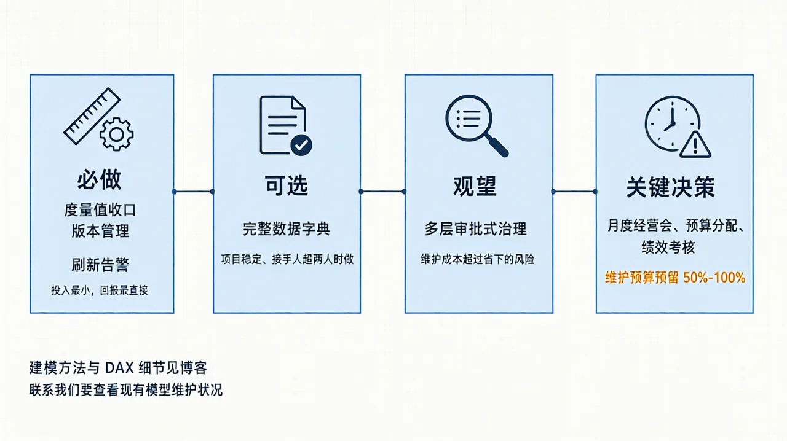

Power BI 项目真正的成本，不在开发，在维护
Power BI 项目真正的成本在上线之后。口径、文档、版本、告警，四件事决定它能活几年。

先说结论：Power BI 项目维护的成本，比开发高。开发是首付，维护是月供。
一个看板从需求到上线，一般四周。上线之后，它要活三年。这三年里口径会变，人会走，源库会改字段，组织架构会调整。按开发的工作量去做预算，项目第二年就开始欠账。
这篇讲三件事：维护的钱花在哪，一份能照着做的清单，哪些维护其实可以不做。
开发是首付，维护是月供
开发阶段的问题都好解，因为有人盯着。
需求不清就开会，模型慢了就优化，页面丑了就改。这四周里，数字是有人负责的。
上线之后不一样。项目进入「正常运转」，谁都不再天天看它。问题从「做得对不对」变成「它还对不对」。
「它还对不对」这件事，每个月都要重新回答一次：源系统加了字段，口径要不要跟着改？某个人调岗了，他的 RLS 角色谁接？财务说回款率算法变了，改在模型里还是改在报表里？
这些问题单个都不大。攒到半年，就是一次返工。
我做了 10 年报表，本职是世界 500 强公司的 BI 开发，也做了 14 块公开看板。返工的项目里，几乎没有一个是当初开发得不好的。问题都出在上线之后没人接。

Power BI 项目维护，钱花在四个地方
一、口径漂移：同一个数，三个出处
最常见的一种。
新需求来了，开发图省事，在报表页面里直接建一个度量值。能用，交付了。
三个月后另一个部门要同一个指标，换个开发，又在另一个页面建了一份。名字不一样，逻辑差一点。
半年后，公司里同一个「回款率」有三套算法。业务对数对不上，开会先花半小时确认用哪个数。
代价不在改这一个度量值上。代价是所有人开始怀疑报表。一旦业务不信数，后面每个需求都要先自证一遍。
治理只有一个动作：度量值只在语义模型里建，一个指标一个度量值，写上描述。报表层只负责摆放，不负责计算。
二、文档缺失：系统只存在某个人的脑子里
字段什么意思，刷新几点跑，口径哪来的，例外规则有几条——这些如果不在文档里，就在某个人的脑子里。
11 月中旬 Reddit 的 r/PowerBI 上有篇帖子，一位 BI 负责人独自撑着整套 Power BI 加 Databricks，从管道到语义模型到看板全是他一个人。他去申请第二个编制，管理层的反应是：看板一直能用，为什么要加人？还反问，AI 不是能写 SQL 吗？
这就是文档缺失最典型的样子。系统看起来很稳，因为它还在跑。脆弱性在跑的时候看不见，只在人请假、离职、生病的时候显形。
文档不是写给领导看的，也不是写给审计看的。是写给三个月后的自己，和那个接你班的人看的。
三、版本失控：改了什么，说不清
PBIX 是二进制文件。打开、改、保存，谁能说清这次改了什么？没人能。
两个人先后改同一个文件，最后靠「最终版」「最终版2」「最终版（真的）」区分。发布出问题，只能回滚到某个日期之前的文件，然后凭记忆重做。
这个问题有现成的解法：用 PBIP（Power BI 项目文件）把模型和报表拆成文本，进 Git。
project/
Sales.SemanticModel/
definition/
tables/*.tmdl # 表、列、度量值，一个表一个文件
relationships.tmdl # 关系单独成文件
Sales.Report/
definition/
pages/ # 页面按目录拆开
拆成文本之后，每次改动都有 diff，谁改的、改了什么、什么时候改的，一目了然。发布打个 tag，回滚是回滚到某个版本，不是回滚到某个文件。
四、刷新和权限没人管：坏在半夜，第二天才知道
Power BI 的故障大多发生在没人看的时候。
网关凭据过期、源库改了字段名、容量超限、刷新超时——报表在早上打开时是空的，业务先看到，你后知道。
这不是你系统独有的问题。11 月 20 日微软发布本地数据网关 2026 年 11 月版（3000.342），更新内容基本是安全补丁、诊断改进和兼容性——厂商自己每个月都在修这一层。平台层都在持续维护，你上面那层不可能一劳永逸。
权限也是同一类。RLS（行级安全）角色是跟着组织架构走的，组织架构一变，权限就该跟着变。没变的那些，就是你不知道的越权。

Power BI 项目维护，落到六个动作
清单不长，难的是每周真的做。
-
度量值收口。 所有计算只在模型里建，报表面板里不写计算逻辑。为什么：口径只有一个出处，改一处全站生效。注意：历史报表里的散落度量值要一次性清掉，不清就等于没做。
-
每个核心指标一张口径卡。 一页纸写清：定义、分子分母、过滤条件、负责人、最后变更时间。为什么：对数的时候不用再开会。注意：只给核心指标写，二三十个就够，全写没人维护。
-
文档写到能交接的程度。 数据字典、ER 图、刷新计划、已知例外。为什么：这是唯一能对抗人员流动的东西。注意：文档跟着版本走，改了模型就改文档，否则三个月后它会变成误导。
-
版本管理。 PBIP 进 Git，主分支只放已发布版本，改动走分支，发布打 tag。为什么：能回答「上周那个数是哪版算出来的」。注意：一开始就要定目录结构和命名，中途改成本很高。
-
刷新和数据量告警。 刷新失败要推送，关键表行数波动超过阈值要推送，核心指标同比突变要推送。为什么：把「业务先发现」变成「你先发现」。注意：告警要有人接，没人接的告警等于没有。
-
权限定期复核。 维护一张 RLS 角色清单，写清每个角色对应哪些人，每季度核一次。为什么：调岗和离职不会自动同步到模型里。注意：复核要用另一个账号实测，看配置不算测过。
按频率排，大概是这个节奏：
| 动作 | 频率 | 单次耗时 |
|---|---|---|
| 刷新告警处理 | 每周 | 视故障而定 |
| 需求与口径变更登记 | 每周 | 半小时 |
| 文档补充 | 每月 | 半天 |
| 权限复核 | 每季度 | 半天 |
| 版本清理与依赖升级 | 每季度 | 半天 |
一个维护得还行的模型，我的估算是每月 4 到 8 小时。一个从没治理过的模型，第一次整理要 40 小时起——这就是欠账的利息。
这套清单我们给客户做交付时会一起给，具体范围可以看我们的服务。

我的判断
必做：度量值收口、版本管理、刷新告警。 这三项投入最小，回报最直接。度量值收口决定口径能不能统一，版本管理决定出问题能不能查，刷新告警决定你是先知道还是后知道。三件事加起来，一周两小时。
可选：完整数据字典。 项目稳定、接手的人超过两个，值得做。一个人的项目，把口径卡写全就够了，数据字典可以等有人要接手时再补。
观望：多层审批式的治理。 三个人的团队上三层审批、五个签字环节，维护成本会超过它省下的风险。治理的目的是让改动可控，不是让改动变慢。
有一种情况这套清单可以砍掉一半：项目寿命明确在半年内、只服务一个决策、数据不敏感。那就只留口径卡和刷新告警，别的不做。给一个临时项目建全套治理，是把维护成本提前花在了不需要的地方。
反过来说，如果这个看板承载的是月度经营会、预算分配、绩效考核——维护预算按开发的 50% 到 100% 预留。低于这个数，第二年一定返工，返工的钱是预算的好几倍。
之前写过的建模方法和 DAX 细节都在博客里。要一起看看现有模型的维护状况，联系我们。
你现在手上的 Power BI 项目，维护时间是从哪挤出来的？
